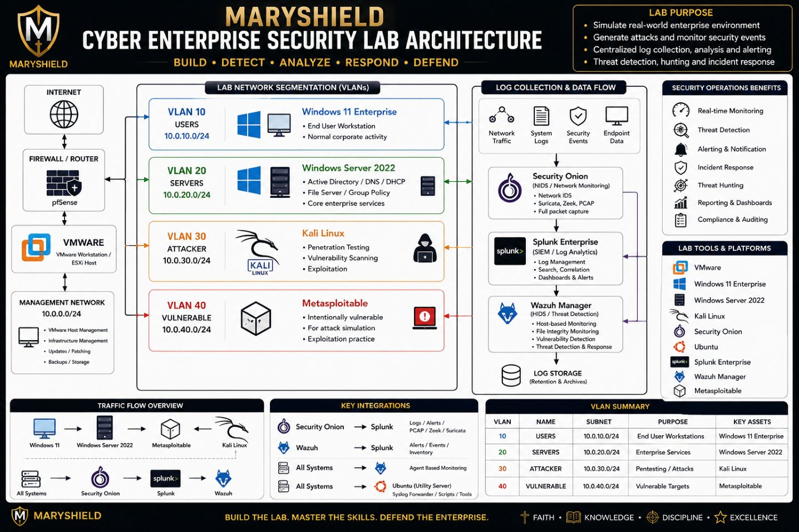

Lab Overview
The MaryShield Cyber Lab is a virtual enterprise environment designed to simulate a real corporate network for cybersecurity training, attack simulation, threat detection, and incident response.
Network Architecture

Enterprise VMware Architecture
Enterprise Technologies
Virtual Machines
| Name | Purpose |
|---|---|
| Windows Server 2022 | Active Directory Domain Controller |
| Windows 11 | Enterprise Workstation |
| Ubuntu | Splunk Server |
| Security Onion | Network Monitoring |
| Wazuh | XDR Platform |
| Kali Linux | Attack Platform |
| Metasploitable | Vulnerable Target |
Attack Simulation
- Kali Linux launches attack.
- Windows Server records events.
- Sysmon collects telemetry.
- Splunk indexes logs.
- Security Onion monitors traffic.
- Wazuh detects endpoint activity.
- Alerts are investigated.
- Windows Server 2022
- Windows 11 Enterprise
- Ubuntu Server
- Splunk Enterprise
- Security Onion
- Wazuh
- Kali Linux
- Metasploitable
- VMware Workstation